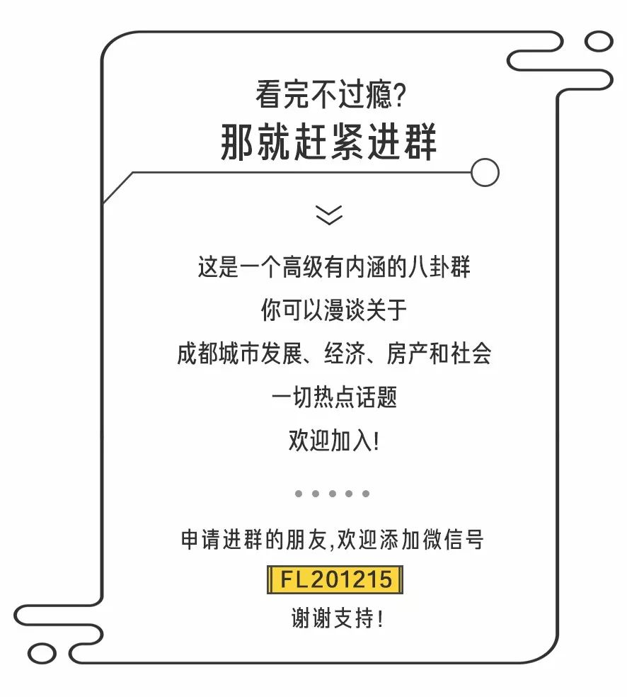

覆盖率达70%的园林水景；其中，200米景观中轴规划了蓝花楹、红豆杉树阵迎宾大道；七大水晶花园包括月季、绣球、月桂、绿篱、木春菊、玫瑰、墨西哥鼠尾草，实现了每季皆有花可赏，四季皆美，一步一景，步步生花；600㎡叠级水景与项目园林、景观中轴一起，演绎了跨水归家的汀步拾趣。
高端产业半径 是你在成都南门买房的第一参考
什么是高端产业半径？
其是指以高端产业聚集区为中心
向四周延伸作同心圆
圆上的一点到中心的距离
即被称为高端产业半径↓↓↓
对于高端产业半径的意义
在研究了众多案例后
一位来自日本的城市研究员山口宏
得出了一条极有价值的结论：
高端产业的聚集
会带来大量高端产业就业人群
作为区域核心消费力支撑
依照就近原则，他们往往更青睐
高端产业半径更小的地方定居
这里的房子价格与价值会更高
换句话说
运用高端产业半径买房
位于半径越小的地方
房子的价值越高、越值得买
放眼全球高端产业聚集区
这条结论也几乎都四海皆准
▽
比如，纽约曼哈顿
这里是美国纽约最小的行政区
但占据着纽约最好的资源
以曼哈顿为中心
这里诞生了最具收藏价值的ONE57
再比如，上海陆家嘴
这里是中国摩天指数最高的地方
摩天建筑下承载的是摩天经济
以及随便百度一下
都会弹出来的 “ 最贵 ” 的房子
和 “ 最好 ” 的生活
看回成都，对于想在这里买房、买到好房的人来说，高端产业半径同样是第一参考。但在运用高端产业半径参考前，更为重要的，是要找到一个 “ 最好 ” 的高端产业聚集区作为中心。
如何理解 “ 最好 ”？大概就是既要像纽约曼哈顿般，占据最佳的资源；又要像上海陆家嘴般，摩天指数下有最好的生活。
而放眼整个成都，当我们把目光聚焦城南，天府1-5街所在的区域，或许能达到这样的要求。为什么这样说？继续往下看。
近年来，伴随城南经济的火箭式发展，“ 中国向西，成都向南 ” 的口号，喊响了国际城南的美誉。
同时为国家级天府新区核心区域、国家级成都自贸区所在，城南更聚集了成都最多的世界500强企业。据统计，在来成都的285家世界500强企业中，将公司落址城南的就达上百家。
而包括这些落户城南的部分世界500强，以及中国500强、民办龙头企业、互联网创业公司在内，更是大部分都盘踞在了天府1-5街所在区域。
据不完全统计，在天府1-5街上，公司企业数量达到了上千家。如《王者荣耀》诞生地的腾讯、说走就走的携程等，都在此扎根。也正因聚集了大批“高产值、高附加、高精尖”产业，这里也催生了大量高净值人群。
从迪拜哈利法塔，到美国帝国大厦，再到中国上海中心，我们往往通过一个区域的摩天指数（以区域摩天大楼的数量为衡量指标），即能判定该区域的城市繁华程度。
一般来说，摩天指数越高的地方，城市繁华程度越高，生活也更加国际、前卫。
而如果你开车沿着天府1-5街游逛，一定会惊叹于这里林立的高楼大厦，这里是成都摩天指数最高、最繁华的地方↓↓↓
从天府一街的199FTC，到天府二街 “ 大裤衩 ” 环球金融中心，到天府三街希尔顿 “ 三角 ” 大楼……在这个区域，摩天地标建筑鳞次栉比，千奇万状，配以高级透蓝的外玻璃幕墙，行走穿梭其间，总给人在国外某个中央商务区的错觉。

在高端产业与摩天大楼的聚集下，大到医疗购物，小到吃饭放松，这里的配套也几乎都是成都拔尖、国际一流范儿。
换句话说，在这里，你享受到的将是不同于成都其他任何地方的国际都市生活。
听歌，有足以达到交响乐团规格的欧洲中心云端·天府音乐厅；逛街，有亚洲最大单体建筑环球中心；想要逛公园？桂溪生态公园、大源中央公园都近在咫尺；偶尔心血来潮，想做个美容，医美 “ 国家队 ” 成都八大处医疗美容医院已正式开院；节假日也想来个浪漫烛光晚餐，诸如希尔顿、费尔蒙、洲际酒店等五星酒店，随时提供一流的服务。
前有高端产业聚集，再有摩天大楼扎堆，再到一流生活配套，可以说，天府1-5街所在区域，定义着城南中心，是即便放眼成都都极具代表性的高端产业聚集区。
由此，我们以它为中心作圆，再运用高端产业半径在此买房，选择半径越小的地方，其占据的资源（高精尖人群、产业、配套）会越多，房子也就越保值。
而搜索附近楼盘，就在离这个中心半径极小的1.5公里位置，今天，我要给你推荐一个极为稀缺的花园洋房项目——德商御璟天骄。
首先，从位置上来说，德商御璟天骄是距离天府1-5街这个 “ 中心 ” 极近的一个项目。直线距离约1.5公里，从项目出发，开车10分钟左右就能到达。
因此，不论是一流的城市配套，还是精致的摩天建筑，抑或是高端产业集群，项目几乎享受 “ 中心 ” 85%的资源。
德商御璟天骄效果图
而除了距离带来的先天资源优势，于 “ 中心 ” 聚集的大量高精尖人群而言，德商御璟天骄更是一个工作之外的 “ 后花园 ”，居住的极佳选择。
▽
猛戳下方观看
德商御璟天骄超级大片
生 态
芦苇、菖蒲随风摇曳
小溪蜿蜒，流水潺潺
项目毗邻新川湿地公园
不论是清晨慢跑
饭后散步、亲子踏青
满眼都是勃勃生机
生 活
于城南极致繁华之处
项目建面147-287㎡
罕见花园洋房设计
独享200㎡私家花园
抬头可望星月，低头可观花草
让你拥有大隐隐于市的静谧
建面149㎡云幕大平层
设计再现Aedas水晶奇境
纯板式，南北通透
低密居住，套四双卫设计
不蜗居，三代同堂不打挤
于城南996工作日常中
这才是真正的舒心生活
园 林
外有超级公园，内有私家花园
在德商御璟天骄的社区里
还精心规划设计了
覆盖率达70%的园林水景
其中，200米景观中轴
规划了蓝花楹、红豆杉树阵迎宾大道
一步一景，步步生花

德商御璟天骄效果图
七大水晶花园包括
月季、绣球、月桂、绿篱
木春菊、玫瑰、墨西哥鼠尾草
实现了每季皆有花可赏，四季皆美
德商御璟天骄效果图
600㎡叠级水景
与项目园林、景观中轴一起
演绎了跨水归家的汀步拾趣
服 务
堪比服务式公寓的星级服务
项目引入了6M尊贵物业服务体系
大到社区24小时红外线监控
小到morning call、报刊订阅
甚至如果你因为工作的繁忙
无暇顾及自己的生活
项目物业还将提供宠物寄养
机场接送、家务整理的多样服务
覆盖到你生活的方方面面

空 间
于项目百米天际线之巅
德商御璟天骄匠造
城南顶配 “ 1个亿 ” 的会所
只服务社区202户业主
德商御璟天骄会所效果图
其中，三大主题功能区
是能满足全龄化的社交场所
而包括无边际泳池、美体中心
云端健身中心、私家宴客厅
商务办公间、桑拿房、按摩室在内
纵享城市上层生活，这里一应俱全
德商御璟天骄天际泳池效果图
交 通
项目坐落于城南主动脉
红星路南延线旁
且毗邻天府大道
进可直达市中心
再加上项目四周
地铁1、6、29号线环绕
未来，公共交通是四通八达
外有高端产业半径的价值加持，内有城南稀缺私享花园，生活尺度之阔绰，交通出行之方便，物业服务之完善，这些都是德商御璟天骄的优势。于城南乃至成都，这里的生活都极有收藏价值，是你在成都买房的极好选择。
德商御璟天骄D1-147㎡户型图

德商御璟天骄D2-287㎡户型图
